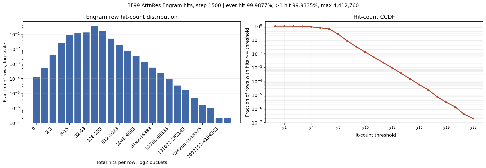

This report compares the BF99 AttnRes Engram run against the new small-memory-init run and summarizes the row-masking counterfactuals from the step-1500 checkpoint.
Current read: AttnRes is a clean architectural win. The memory benefit is broad but highly Zipf-shaped: a small hot tail carries most of the causal signal, while cold rows are weakly useful only inside the full mixture. Small memory init at 1e-2 is a small but consistent win. The naive layer-2 residual source was rejected by the model and hurt by step 500. The 1e-2 run is at step 500/1500 with val_loss 7.2509; compare against std=1.0 at the same step as more points arrive.
Layer-8 AttnRes can also attend to the saved post-layer-2 residual stream.
Matched Init Diagnostics
step
std=1 loss
std=1e-2 loss
delta
param RMS
grad RMS
AttnRes p(mem)
250
8.5154
8.5069
-0.0085
3.778 -> 2.517
0.001 -> 0.001
0.612 -> 0.612
500
7.2255
7.2000
-0.0255
6.704 -> 5.810
0.000 -> 0.001
0.679 -> 0.678
750
5.2429
5.2385
-0.0044
13.610 -> 12.890
0.000 -> 0.000
0.565 -> 0.506
1000
3.4983
3.4966
-0.0017
15.600 -> 15.000
0.000 -> 0.000
0.425 -> 0.390
1250
3.3559
3.3536
-0.0023
18.060 -> 17.510
0.000 -> 0.000
0.347 -> 0.324
1500
3.2589
3.2563
-0.0026
18.570 -> 18.050
0.000 -> 0.000
0.312 -> 0.300
Counterfactual Memory Masks
Baseline for deltas is the normal std=1 AttnRes saved run final loss, approximately 3.2589. Unseen-row-only masking was 3.2600; all-memory masking was 3.4202.
Std=1 vs Std=1e-2 Counterfactuals
mask
std=1 loss
std=1 delta
std=1e-2 loss
std=1e-2 delta
small-init minus std=1
unhit
3.2600
0.0011
3.2575
-0.0000
-0.0025
all_memory
3.4202
0.1613
3.4106
0.1531
-0.0096
hit_ge_1024
3.3177
0.0588
3.3187
0.0612
0.0010
hit_ge_256
3.4017
0.1428
3.4073
0.1498
0.0056
hit_ge_64
3.4444
0.1855
3.4423
0.1848
-0.0021
hit_lt_64
3.2623
0.0034
3.2599
0.0024
-0.0024
hit_lt_256
3.2945
0.0356
3.2918
0.0343
-0.0027
Mask Hot Rows Cumulatively
mask
loss
delta
all_memory
3.4202
+0.1613
hit_ge_1024
3.3177
+0.0588
hit_ge_16
3.4288
+0.1699
hit_ge_256
3.4017
+0.1428
hit_ge_4
3.4205
+0.1616
hit_ge_64
3.4444
+0.1855
Mask Cold Rows Cumulatively
mask
loss
delta
hit_lt_1024 rows 98.7%, hits 66.1%
3.3744
+0.1155
hit_lt_16 rows 11.4%, hits 0.7%
3.2601
+0.0012
hit_lt_256 rows 91.5%, hits 46.3%
3.2945
+0.0356
hit_lt_64 rows 37.8%, hits 6.5%
3.2623
+0.0034
Mask Top Interpretable Punctuation/Semantic Rows
mask
loss
delta
punct_top100
3.2601
+0.0012
punct_top25
3.2600
+0.0011
punct_top500
3.2602
+0.0013
semantic_top100
3.2600
+0.0011
semantic_top25
3.2600
+0.0011
semantic_top500
3.2600
+0.0011
Hit Count Distribution

Working Hypotheses
Zipf law is central. Row utility is not proportional to row count. The top 8.5% of rows by hit count covered 53.7% of training touches and caused nearly all of the all-memory ablation damage when removed.
Cold rows are not pure noise. Masking hit<64 removed 37.8% of rows and slightly worsened loss. They provide small support inside the full mixture, even if they cannot substitute for hot rows.
Partial memory can be miscalibrated. Masking hit>=64 was worse than masking all memory, which suggests the readout/AttnRes merger expects the co-adapted full memory distribution.
Init scale affects learning, not just output scale. RMS normalization can hide row magnitude at the final output, but key/value projections, gate dynamics, SparseAdam update-to-param ratios, and the early AttnRes mixture still see the init regime. The 1e-2 run had lower row RMS, higher gradient-to-param ratio, lower memory attention probability, and slightly better loss.
Depth-skip residuals need a better interface. Adding the raw post-layer-2 residual as a third layer-8 AttnRes source hurt early BF99 loss and was downweighted by the router. A raw residual stream is probably too broad; a projected/delta/cache stream is a better test.
Next Bets
Prefer small memory init by default, and sweep 1e-3/1e-4 or add a learned readout scale initialized near zero.
Add causal attribution by validation-token usage: aggregate loss delta or logit delta by row/head/position instead of selecting rows by training frequency alone.
Replace raw layer-2 residual reuse with a compressed/projected delta cache source, then let layer 8 attend over current state, Engram readout, and that cache.
Train with frequency-aware confidence rather than eval-only masks: e.g. per-row learned confidence, hit-count prior, or dropout/cold-row annealing so partial memory states are calibrated.